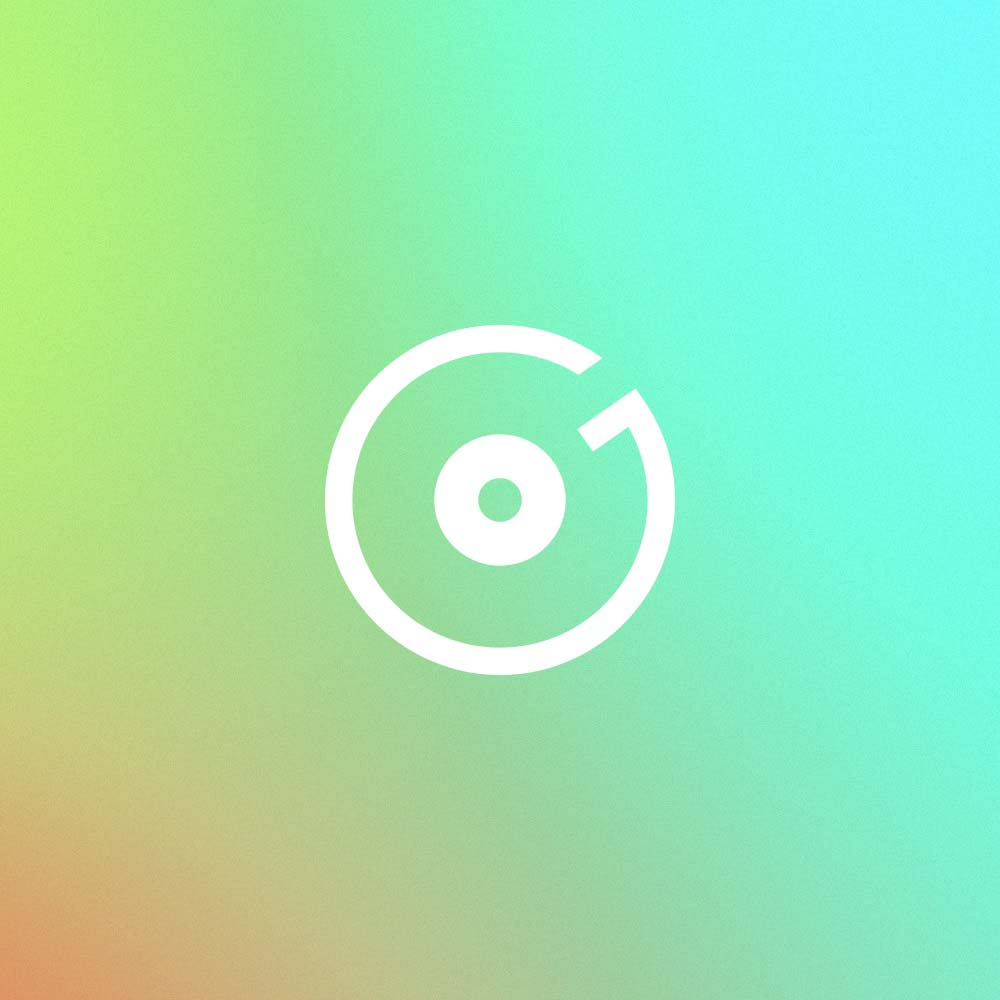

我的音乐
播放列表
已选择 0 首

这里还没有音乐
添加电脑上的歌曲，或者导入 Groove 创建的播放列表。
音乐库
添加本地音乐，导入 Groove 播放列表，或管理自动扫描的文件夹。
音乐文件夹
尚未添加自动扫描目录
外观
选择适合当前环境的界面主题。
自定义主题色
调整按钮、选中状态与渐变强调色。
音乐内容显示
切换我的音乐页面的显示密度。
逐字歌词（实验功能）
开启后强制从网络获取歌词。
歌词中文翻译
自动识别非中文歌词，并在歌曲详情页和桌面歌词中显示中文翻译。
歌词字体大小
调整歌词字号。
桌面歌词字体大小
调整桌面歌词悬浮窗中的歌词字号。
桌面歌词字体颜色
单独调整桌面歌词的主色与渐变色。
锁定桌面歌词
锁定后悬浮窗不会遮挡鼠标操作，可在这里或托盘菜单解除锁定。
桌面歌词位置
将桌面歌词悬浮窗还原到主显示器顶部居中的默认位置。
全局快捷键
即使 MedoMusic 不在前台，也可以控制播放和刷新歌词。
启用全局暂停快捷键
启用全局暂停快捷键：Alt+S
启用全局歌词刷新快捷键
启用全局歌词刷新快捷键：Alt+D
启用全局上一首歌快捷键
启用全局上一首歌快捷键：Alt+Q
关闭行为
选择点击右上角关闭按钮时 MedoMusic 的处理方式。
关于 MedoMusic
本地 Windows 音乐播放器。
- 应用版本
- 正在读取
- 安装目录
- E:\Medo_music\release
正在查找歌词